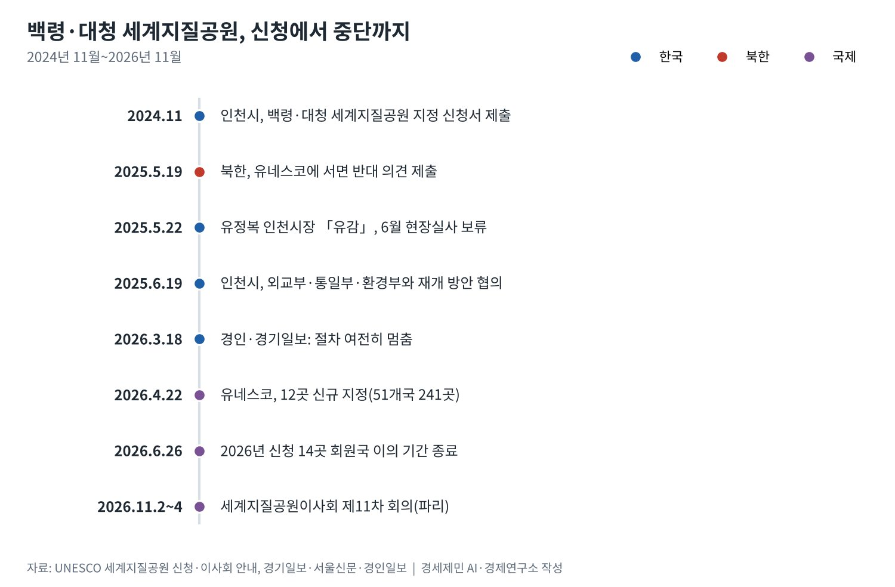
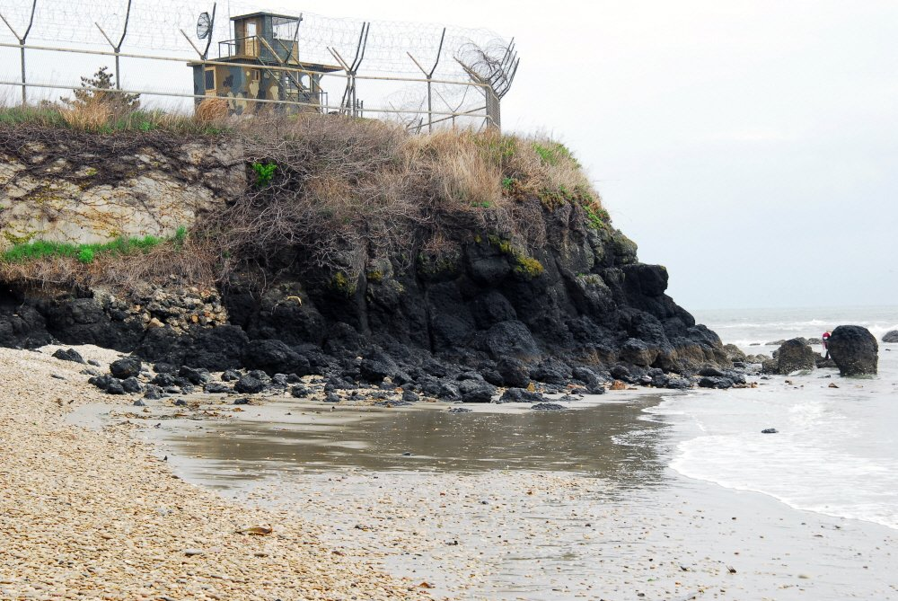
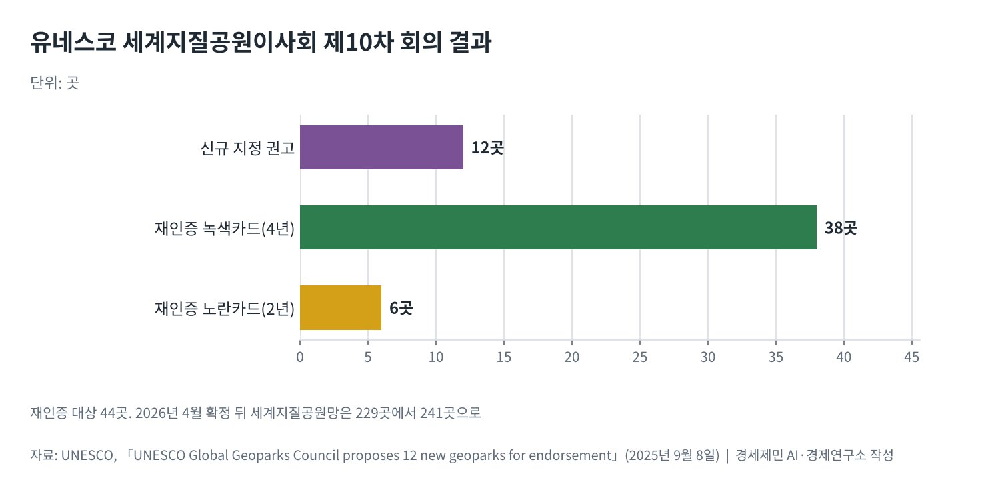

[서해 현안] 북한, 유네스코를 이용해 백령·대청까지 NLL 분쟁 확산 노림수
유네스코 운영지침 5.4(iv)조, 회원국 서면 이의 있으면 과학 평가로 못 넘어가
2025년 5월 19일 북한 이의제기, 해결은 「관련 회원국」 몫으로 남아
정전협정이 유엔군 관할로 남긴 섬까지 국제기구 무대의 분쟁으로 끌어들여
AI경세제민=김갑봉 기자 | 북한이 2025년 5월 19일 유네스코에 백령·대청 세계지질공원 지정에 반대하는 서면 의견을 냈다. 인천시가 2024년 11월 낸 신청은 과학 평가 단계로 넘어가지 못했다. 경기일보에 따르면 6월로 잡혔던 현장실사도 보류됐다.
북한이 문제 삼은 곳은 정전협정이 유엔군 관할로 남긴 섬이다. 북한은 총 대신 국제기구 절차를 썼다. 군사 대치의 바다에 있던 섬을 국제 문서 속 다툼의 대상으로 끌어들였다.
한 문장으로 멈춘 심사
유네스코 세계지질공원 운영지침 5.4(iv)조는 회원국이 후보지에 서면 이의를 내면 「과학 평가로 넘어가지 않는다」고 정했다. 이어 「관련 회원국들이 해결책을 찾아야 한다」고 적었다. 다른 중재 기구는 정하지 않았다.
유네스코는 해마다 새 신청지의 지질·지리 요약을 회원국에 공개한다. 회원국은 공개 뒤 3개월 유예 기간 안에 서면 이의를 낼 수 있다. 2026년 신청분의 이의 기간은 6월 26일 자정(중부유럽시간)에 끝났다.
경기일보에 따르면 유정복 인천시장은 2025년 5월 22일 북한의 반대에 유감을 밝혔다. 북한이 이의신청 이유를 밝혀야 한다고도 했다. 유네스코가 이의 사유를 공개하는 절차는 운영지침에서 찾지 못했다.

섬이 아니라 바다를 겨눈 이의
1953년 7월 27일 정전협정은 바다의 경계를 정하지 않았다. 협정은 백령도·연평도를 비롯한 다섯 섬을 유엔군 관할로 남겼다. 북방한계선(NLL)은 한 달쯤 뒤 유엔군사령부가 그은 선으로 알려져 있다.
북한은 1999년 9월 NLL보다 남쪽의 선을 일방적으로 내세웠다. 김정은 국무위원장은 2024년 1월 15일 「불법무법의 《북방한계선》을 비롯한 그 어떤 경계선도 허용될수 없다」고 했다. 지질공원 이의는 그 연장선에 있다.
세계지질공원은 「하나의 통합된 지리적 구역」이어야 한다. 북한의 이의는 그 구역이 어느 나라의 관할인지를 국제기구 앞에서 문제 삼는 효과를 낸다. 실제 이의 사유는 공개되지 않았다.

정전 관리의 빈틈과 다자 무대
북한이 쓴 무대는 군사정전위원회가 아니라 유엔 전문기구다. 세계지질공원이사회는 투표권을 가진 위원 12명으로 꾸려진다. 이사회는 해마다 한 번 모여 신규 지정을 권고하고 유네스코 집행이사회가 승인한다.
2025년 9월 칠레 회의는 신규 12곳을 권고했다. 재인증 대상 44곳 가운데 38곳은 4년, 6곳은 2년 연장을 받았다. 모든 단계가 과학 평가로 움직이지만 회원국 이의 앞에서는 그 평가가 시작되지 않는다.
이 절차는 회원국의 이의를 거르지 않는다. 지침은 이의가 정당한지 따지는 단계를 두지 않았다. 이의를 낸 나라가 대화에 나서지 않으면 후보지는 기한 없이 멈춘다. 국경과 관할이 다툼 중인 지역에 불리한 설계다.

북한은 이 설계를 정확히 읽었다. 총 한 발 쏘지 않고 국제기구 기록에 백령·대청을 다툼의 대상으로 남겼다. 2010년 연평도 포격처럼 군사 도발로 맞서던 방식과 다른 길이다.
남은 길과 남은 시간
지침은 해결을 「관련 회원국」에 맡겼다. 북한은 2026년 3월 새 헌법에 「남쪽으로 대한민국과 접하고 있는 영토」를 적었지만 해상 경계는 비워 뒀다. 대화의 문은 닫고 법의 여백은 남겨 둔 셈이다.
유네스코 세계지질공원이사회는 11월 2~4일 파리 유네스코 본부에서 제11차 회의를 연다. 이사회는 신청을 받아들이거나 거부하거나 최대 2년 미룰 수 있다. 이의로 멈춘 백령·대청이 이번 심사 대상에 올랐다는 발표는 없다.
한국 정부가 할 일은 두 가지다. 이의 절차가 분쟁 수단으로 쓰인 사례를 유네스코에 기록으로 남기고, 남북 접촉 창구를 여는 일이다.
백령·대청의 지층은 10억년 안팎의 시간을 견뎠다. 그 섬의 국제 절차는 지금 남북 관계의 시간에 묶여 있다. 서해의 선을 두고 벌어지는 다툼이 지질학의 언어까지 붙잡았다.
참고문헌
기관 자료
- UNESCO, 「Statutes of the International Geoscience and Geoparks Programme; Operational Guidelines for UNESCO Global Geoparks」(2.2조·5.3조·5.4(iv)조·5.5조), 노르웨이 순호르들란 세계지질공원 게재본. https://www.geoparksunnhordland.no/wp-content/uploads/2024/12/UGGP-Statutes-and-guidelines.pdf
- UNESCO, "UNESCO Global Geoparks applications". https://www.unesco.org/en/iggp/geoparks/applications
- UNESCO, "UNESCO Global Geoparks Council". https://www.unesco.org/en/iggp/geoparks/council
- UNESCO, "UNESCO Global Geoparks Council proposes 12 new geoparks for endorsement", 2025년 9월 8일. https://www.unesco.org/en/articles/unesco-global-geoparks-council-proposes-12-new-geoparks-endorsement
연구 논문과 보고서
- National Committee on North Korea(NCNK), "The Northern Limit Line"(브리핑 페이퍼). https://www.ncnk.org/resources/briefing-papers/all-briefing-papers/northern-limit-line
- Wikipedia, "Northern Limit Line"(2026년 10월 21일 열람). https://en.wikipedia.org/wiki/Northern_Limit_Line
- Wikipedia, "Baengnyeongdo"(2026년 10월 21일 열람, 정전협정상 관할 대조용). https://en.wikipedia.org/wiki/Baengnyeongdo
언론 보도
- 노재영, 「유정복 "북한의 백령·대청 유네스코 지정 반대 유감"…"북한, 이의신청 제기 이유 밝혀야"」, 경기일보, 2025년 5월 22일. https://kyeonggi.com/article/20250522580314
- 강남주, 「'北 반대' 백령·대청 세계지질공원…인천시, 외교 채널 통해 대응」, 서울신문, 2025년 6월 19일. https://m.go.seoul.co.kr/news/2025/06/19/20250619500209
- 김희연, 「대청도 찾은 박찬대, 유네스코 세계지질공원 지정 노력 등 '평화 공약' 구상 언급」, 경인일보, 2026년 3월 18일. https://www.kyeongin.com/article/1760439
- 박귀빈, 「인천 백령 세계지질공원 등재 재추진 시급」, 경기일보, 2026년 3월 18일. https://www.kyeonggi.com/article/20260318580373
- 김예진, 「北 김정은 "80년 북남관계사 종지부" 시정연설 [전문]」, 세계일보, 2024년 1월 16일. https://www.segye.com/newsView/20240116510661
- 홍승욱, 「북, '영토조항 신설'·'통일삭제' 개헌 단행」, 자유아시아방송, 2026년 5월 6일. https://www.rfa.org/korean/in-focus/2026/05/06/north-korea-territory-unification-removed/
- 하윤아, 「北, 개정 헌법에 영토조항 신설…대남 적대 문구는 없어」, 데일리NK, 2026년 5월 6일. https://www.dailynk.com/20260506-6/
[사진 출처]
- [사진1] Korea Heritage Service, "백령도진촌리의감람암포획현무암분포지.jpg", 위키미디어 공용, 공공누리 제1유형. https://commons.wikimedia.org/wiki/File:백령도진촌리의감람암포획현무암분포지.jpg
※ 이 기사는 AI 프로그램 클로드를 활용해 작성했습니다.
관련기사
- [서해 현안] 중국 서해 구조물 설치, 국제법 위반 소지와 외교 대응
- [서해 현안] 북한 이의제기로 멈춘 백령·대청 세계지질공원 지정
- [동맹과 국방] 군사력 세계 5위 한국, 자주국방은 어디까지 왔고 동맹은 무엇을 요구하나
- [동맹과 국방] 전작권 전환, 한국은 '2028년' 미국은 '2029년 1분기'…12월 안보협의회의가 가른다
저작권자 © AI경세제민 무단전재 및 재배포, AI학습 및 활용 금지